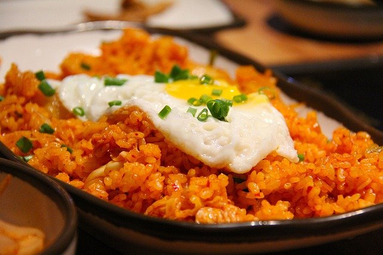

볶음밥 만들기

계란 볶음밥 만드는 방법
- 대파는 송송 썰어 준비한다.
-
프라이팬에 식용유, 대파를 넣어 파 기름을 내고 노릇해지면 한쪽으로
몰아둔다.
- 다른 한쪽에 달걀을 넣어 스크램블 한다.
-
재료가 없는 쪽에 간장을 넣어 눌어붙도록 끓여주고 스크램블 한 달걀, 볶은
대파와 섞어준다.
-
달걀, 대파가 골고루 섞이면 맛소금, 밥을 넣고 불을 끈 후 국자를 이용하여
섞어준다.
- 밥이 골고루 섞이면 센 불에 올려 볶는다.
- 기호에 따라 MSG를 넣어 볶은 후 완성한다.
만들기 힘들면 주문 시키기